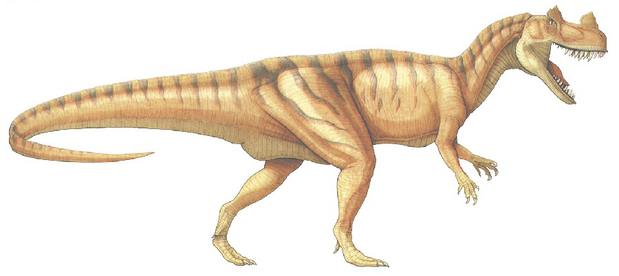
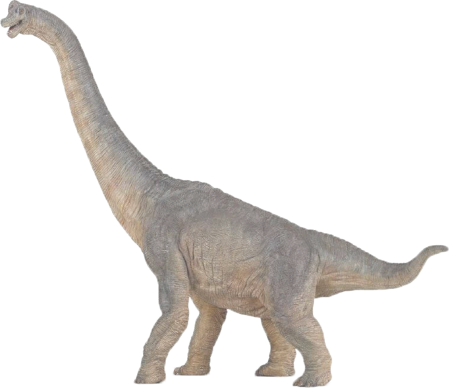
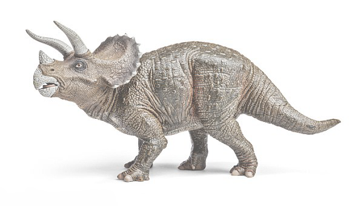

Ceratosaurus
Ceratosaurus je ve stavbě mozkovny mnohem pokročilejší než geologicky mladší karnosauři (např. Tyrannosaurus).
Na nosních kostech za nosními otvory měl hřebenovitý výstupek, který byl za života jedince pokryt rohovinou a společně s vystouplými horními okraji očnic dodával hlavě ceratosaura bizarní vzhled. Zuby byly typicky karnosauří: ploché, dýkovité, horní větší než dolní. Přední končetiny byly krátké, čtyřprsté, poměrně primitivní.
Ceratosaurus se pohyboval výhradně po zadních končetinách, které byly silné a tříprsté. Na hřbetě podél páteře měl úzké kostěné desky, snad rudiment pancíře.
Ceratosaurus se běžně řadí mezi karnosaury, ale některé znaky (např. stavba obratlů a pánve) připomínají spíše celurosaury. To by nasvědčovalo blízké příbuznosti obou skupin, přestože jejich vnější vzhled je diametrálně rozdílný.

Brontosaurus
Brontosaurus se má správně jmenovat Apatosaurus, ale rodové jméno Brontosaurus se vžilo natolik, že ho používají nejen laici, ale i paleontologové. Je to bezesporu nejznámější a nejpopulárnější dinosaur.
Lebku měl malou, s malými nosními otvory obrácenými dopředu. Přes své velké rozměry měli brontosauři malý mozek, a proto se u nich, stejně jako u diplodoků, vyvinulo druhé nervové ústředí v křížové oblasti.
Krk byl dlouhý, prohnutý. Končetiny brontosaura byly sloupovité, přední o něco kratší než zadní.Drobné lopatkovité a kolíčkovité zuby ukazují, že brontosauři byli býložravci, kteří se živili vodním rostlinstvem.
Dříve se předpokládalo, že žili většinou ve vodě jako dnešní hroši. Současné názory v nich vidí živočichy, kteří se ve stádečkách pohybovali a žili spíše na souši než ve vodě.
Nalezené stopy dokazují, že stádečka brontosaurů měla jakousi "rodinnou strukturu".
Mláďata se pohybovala uprostřed stáda, kde byla více chráněna před nepřáteli, a vnější ochranu představovali dospělí a silní jedinci.

Triceratops
Triceratops má lebku opatřenou třemi rohy. Dva vyrůstaly nad očnicemi a třetí, obvykle menší, na nosních kostech.
Během života jedince se rohy zvětšovaly a často i různě stáčely, což vedlo při nedostatečných znalostech těchto zvířat ke stanovení četných samostatných druhů a poddruhů.
Týlní partie lebky je protažena v kostěný krční límec, který kryl krk zvířete. Jeho okraje byly opatřeny drobnými výrůstky, které se rovněž během života jedince měnily. Přední čelisti byly přeměněny v zobákovité rostrum, adaptované na odstřihávání větviček a listů.
Trup připomínal trup nosorožce, kůže byla tlustá, na povrchu rozpadlá v mnoho nepravidelných mnohobokých políček. Končetiny byly silné, digitigrádní, to znamená, že zvíře při chůzi našlapovalo pouze na prsty.
Triceratopsi žili v oblastech, kde vedle rozsáhlých bažin a jezer byly i výše položené suché plošiny, porostlé háji sekvojí, jinanů a jiných stromů. Žili buď jednotlivě, nebo v malých skupinkách jako dnešní nosorožci.
